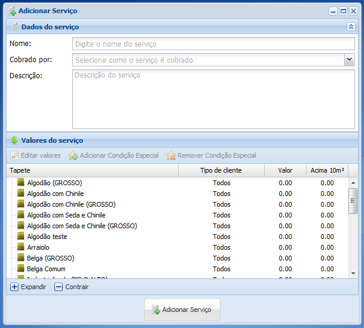
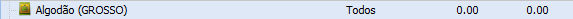
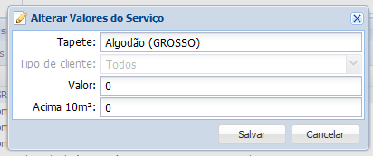
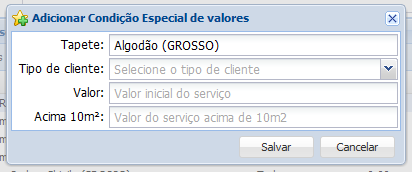
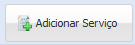

1. Clique no botão Adicionar
2. Abrirá uma nova janela

Digite o nome do serviço em Nome, selecione o tipo de cobrança em Cobrado por e caso deseje digite uma descrição no campo Descrição.
3. Selecione o tipo de tapete para adicionar o valor do serviço

4. Clique duas vezes sobre o tapete ou no botão Editar valores para adicionar os valores do serviço referente ao tapete selecionado

Digite o valor do serviço para o tapete selecionado no campo Valor, o valor caso o serviço seja em acima de 10m² no campo Acima de 10m² e clique no botão Salvar, caso não queira mais adicionar o novo estado clique no botão Cancelar.
5. Ainda com o tapete desejado selecionado, clique no botão Adicionar Condição Especial caso queira adicionar um condição extra as características do serviço
6. Abrirá uma nova janela

Seleciono o tipo de cliente no campo Tipo de cliente, digite o valor do serviço para o tapete selecionado no campo Valor, o valor caso o serviço seja em acima de 10m² no campo Acima de 10m² e clique no botão Salvar, caso não queira mais adicionar o novo estado clique no botão Cancelar.
8. Clique no botão Adicionar Serviço para finalizar
